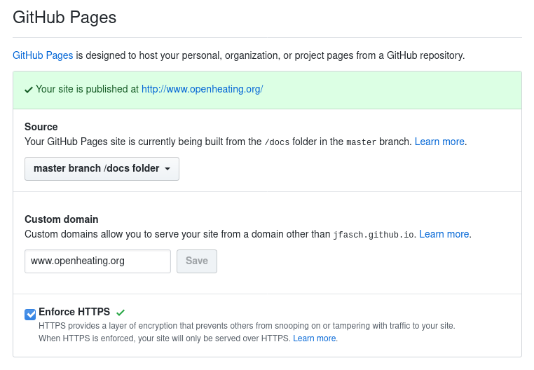

Adding a Custom Domain to a Github Pages Project Site¶
This is remarkably simple nowadays. The Github Pages documentation is a little confusing: they only talk about user and organization pages, and not about project pages. There are numerous posts on the internet that suggest that adding a custom domain to a project page has been cumbersome in the past - these days are over, apparently. Following is what I did.
For the
openheating-pagesproject, configure a custom domain(Enforcing HTTPS also makes sense, while we are at it)
All this does is to create a
docs/CNAME; pull the changes,$ cd $HOME/openheating-pages $ git pull
Point
www.openheating.orgtojfasch.github.ioAt your DNS provider, create a
CNAMEDNS record forwww.openheating.organd set its value to point tojfasch.github.io. Wait some time (minutes?) for the changes to propagate. Check like so,$ dig www.openheating.org ; <<>> DiG 9.11.14-RedHat-9.11.14-2.fc31 <<>> www.openheating.org ;; global options: +cmd ;; Got answer: ;; ->>HEADER<<- opcode: QUERY, status: NOERROR, id: 29463 ;; flags: qr rd ra; QUERY: 1, ANSWER: 5, AUTHORITY: 0, ADDITIONAL: 0 ;; QUESTION SECTION: ;www.openheating.org. IN A ;; ANSWER SECTION: www.openheating.org. 3600 IN CNAME jfasch.github.io. jfasch.github.io. 3600 IN A 185.199.110.153 jfasch.github.io. 3600 IN A 185.199.108.153 jfasch.github.io. 3600 IN A 185.199.111.153 jfasch.github.io. 3600 IN A 185.199.109.153 ;; Query time: 66 msec ;; SERVER: 192.168.1.1#53(192.168.1.1) ;; WHEN: Tue Feb 18 00:21:04 CET 2020 ;; MSG SIZE rcvd: 131
In the
ANSWER SECTIONyou can see thatwww.openheating.org.(the trailing dot says this is a FQDN “Fully Qualified Domain Name”) is an alias (CNAME) forjfasch.github.io.. And btw.,jfasch.github.io.has four addresses (A).Done; surf to https://www.openheating.org.